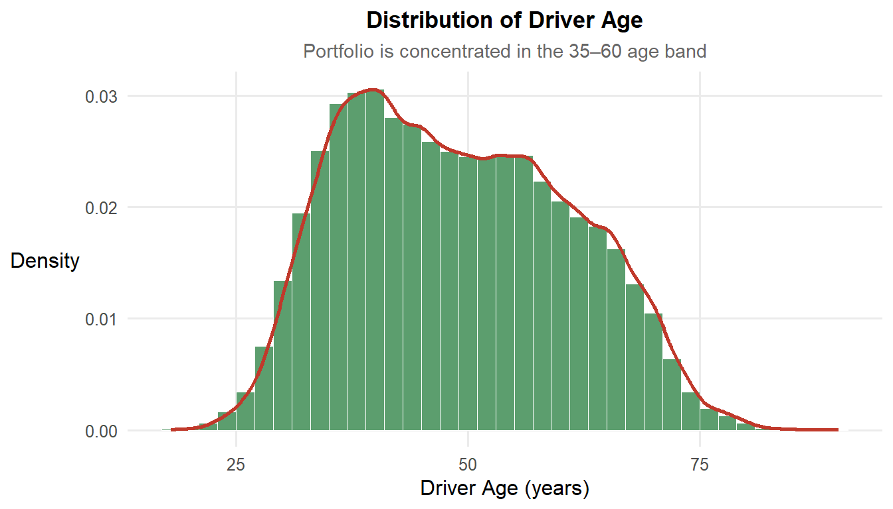
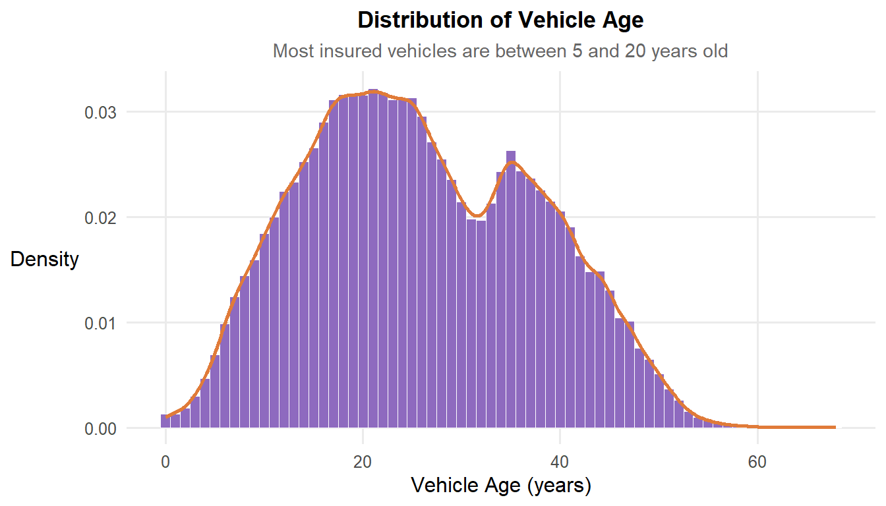
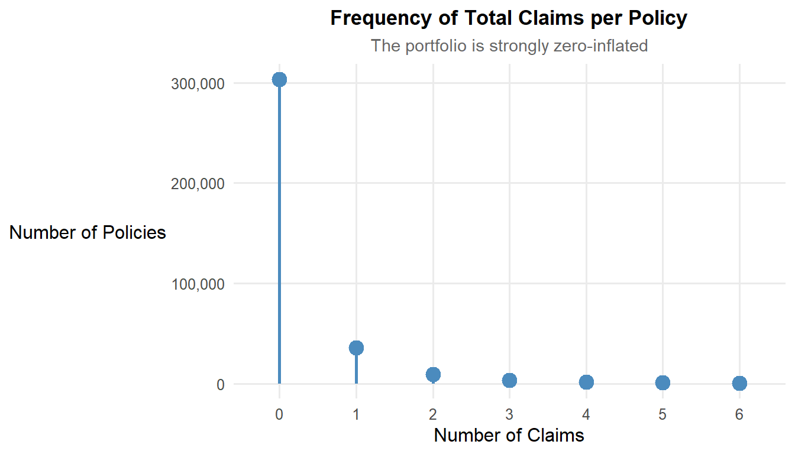
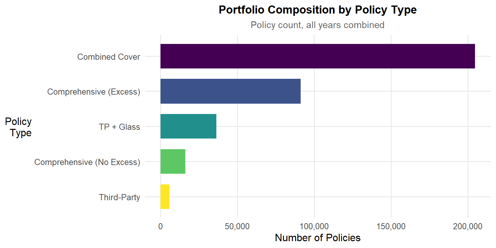
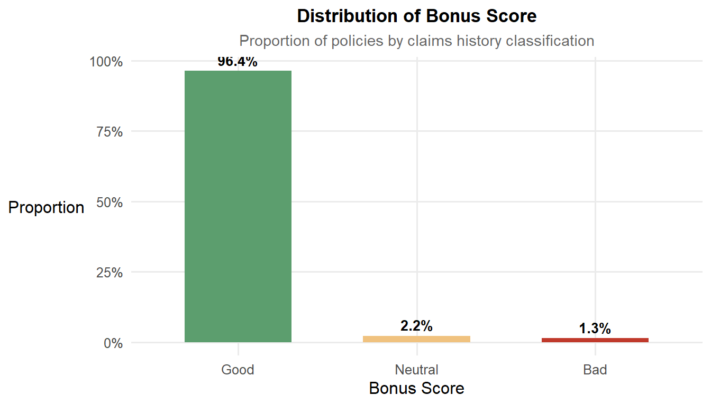
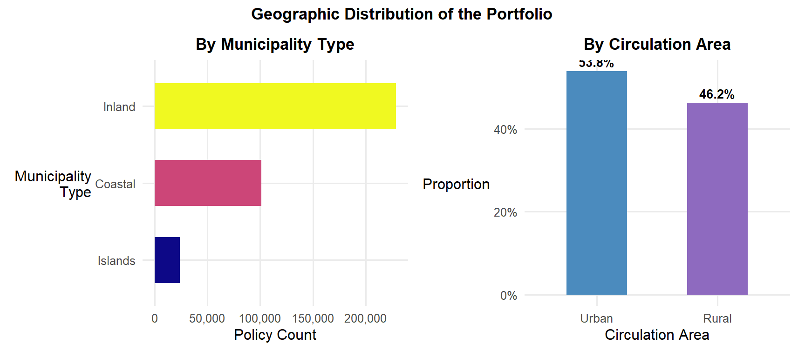
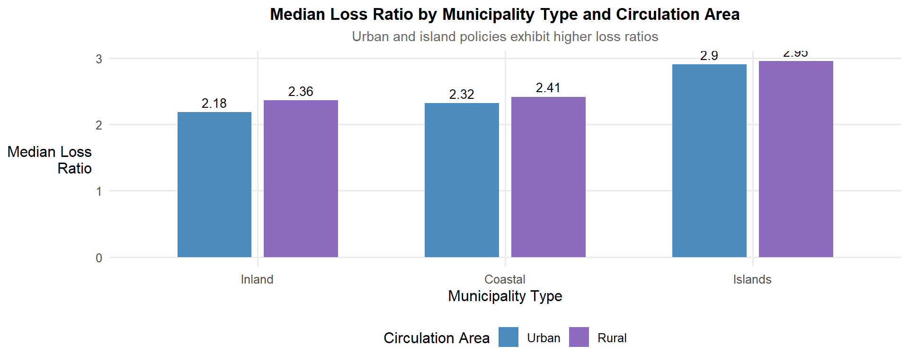
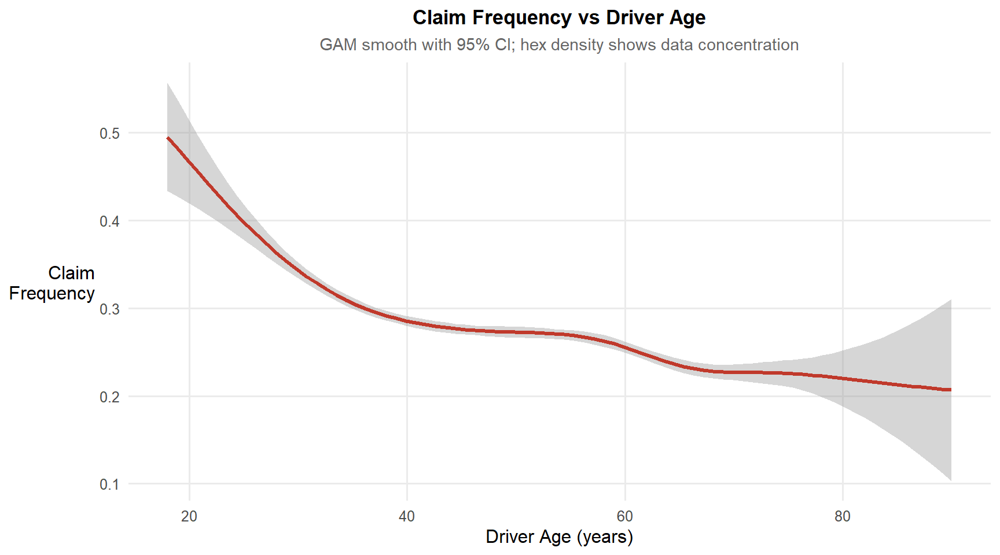
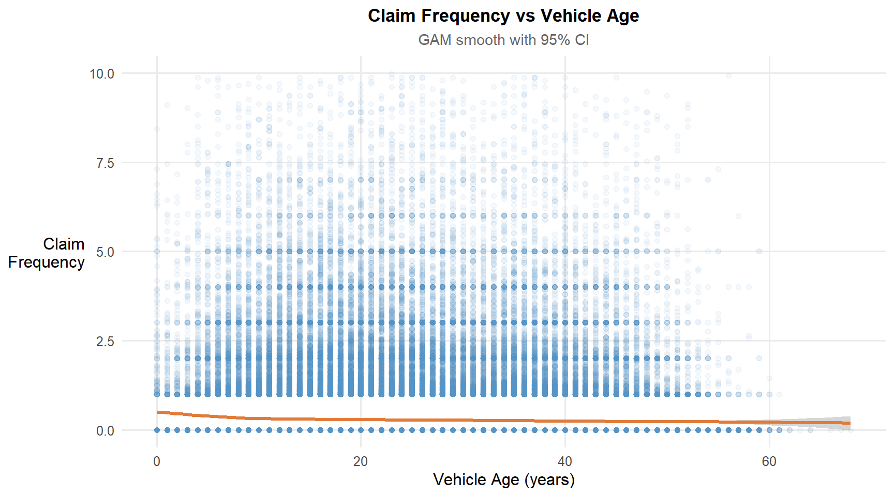
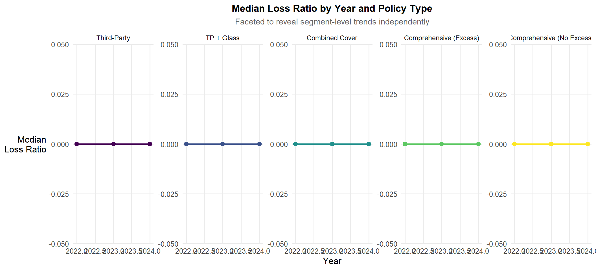

pacman::p_load(
tidyverse, readr,
ggdist, ggridges, ggpubr,
ggcorrplot, patchwork,
scales, viridis, plotly
)Take-home Exercise 01
Visual Analytics for Data Discovery: Exploring a Motor Vehicle Insurance Portfolio
1 Introduction
1.1 Background
Insurers often carry underperforming portfolios where the root causes of poor profitability and high volatility remain unknown. Traditionally, the use of analytics in the insurance industry has been limited to dashboard reporting in commercial off-the-shelf tools such as Tableau and Microsoft Power BI. These tools, while accessible, lack advanced analytical capabilities for deeper exploratory investigation.
Visual analytics — which integrates data visualisation, statistics, and data mining guided by human judgment — offers a more powerful approach. By combining automated processing with pattern recognition, visual analytics can surface unexpected insights that drive effective data-driven decision-making.
1.2 Objective and the Analytical Questions
This take-home exercise applies appropriate visual analytics techniques to a real-world motor vehicle insurance portfolio from a Spanish non-life insurance company, using ggplot2 and its extensions in R. The specific analytical questions addressed are:
What are the distributions and characteristics of the key numerical and categorical variables in the portfolio?
What factors influence the profitability (measured by loss ratio) and volatility (measured by claim frequency and severity) of the insurance portfolio?
Are there statistically significant differences in loss performance across policy types, driver profiles, and geographic segments?
2 Getting Started
2.1 Setting the Analytical Tools
The R packages used in this exercise are:
tidyverse for data import, wrangling, and visualisation via the grammar of graphics;
readr for reading delimited data files;
ggplot2 as the primary visualisation engine;
ggdist for visualising distributions and uncertainty with half-eye and raincloud plots;
ggridges for ridgeline density plots across groups;
ggpubr for annotating statistical test results directly onto plots;
ggcorrplot for visualising correlation matrices;
patchwork for composing multiple ggplot2 panels;
scales for axis formatting (e.g., percent, comma);
viridis for colour-blind-safe palettes; and
plotly (bonus) for converting ggplot2 charts to interactive visualisations.
The code chunk below uses p_load() from the pacman package to check, install, and load all required packages.
A consistent ggplot2 theme is set globally to maintain visual coherence across all plots.
theme_set(
theme_minimal(base_size = 12) +
theme(
plot.title = element_text(face = "bold", hjust = 0.5, size = 13),
plot.subtitle = element_text(hjust = 0.5, colour = "grey40", size = 11),
axis.title.y = element_text(angle = 360, vjust = 0.5, hjust = 1),
legend.position = "bottom",
panel.grid.minor = element_blank()
)
)2.2 Data Source
The dataset is a real-world motor vehicle insurance portfolio from a Spanish non-life insurance company, made available via Mendeley Data. It covers policy years 2022 to 2024 and contains 354,140 policy records across 47 variables, grouped into four domains:
| Domain | Examples |
|---|---|
| Policy & insured characteristics | policy_type, bonus_score, payment_frequency |
| Driver & vehicle characteristics | driver_age, vehicle_age, fuel_type, vehicle_brand |
| Premiums | total_premium, liability_premium, coverage-specific premiums |
| Exposure, claims & incurred costs | total_claims, total_incurred, total_exposure |
3 Data Wrangling
3.1 Importing the Data
The dataset uses a semicolon (;) as its delimiter. The read_delim() function from readr is used to import it correctly, specifying the separator explicitly.
insurance <- read_delim(
"data/Dataset_of_motor_insurance_portfolio.csv",
delim = ";",
show_col_types = FALSE
)A quick inspection confirms the dimensions and column types:
glimpse(insurance)Rows: 354,140
Columns: 47
$ insured_id <dbl> 1, 2, 2, 2, 3, 3, 3, 4, 4, 4, 5, 5, 5, 6, …
$ year <dbl> 2022, 2022, 2023, 2024, 2022, 2023, 2024, …
$ policy_type <chr> "COMP_E", "COMP_E", "COMP_E", "COMP_E", "C…
$ policy_status <chr> "C", "A", "A", "A", "A", "A", "A", "A", "A…
$ business_type <chr> "NB", "P", "P", "P", "NB", "P", "P", "NB",…
$ payment_frequency <chr> "A", "A", "A", "A", "S", "S", "S", "A", "A…
$ bonus_score <chr> "G", "G", "G", "G", "G", "G", "G", "G", "G…
$ driver_age <dbl> 48, 43, 44, 45, 45, 46, 47, 32, 33, 34, 39…
$ vehicle_age <dbl> 22, 24, 25, 26, 26, 27, 28, 12, 13, 14, 20…
$ age_driving_licence <dbl> 26, 19, 19, 18, 19, 19, 19, 19, 19, 19, 19…
$ fuel_type <chr> "G", "D", "D", "D", "D", "D", "D", "D", "D…
$ vehicle_value <dbl> 149511.44, 65065.12, 65065.12, 65065.12, 5…
$ seats <dbl> 4, 8, 8, 8, 7, 7, 7, 5, 5, 5, 5, 5, 5, 5, …
$ power_to_weight_ratio <dbl> 3.92, 10.15, 10.15, 10.15, 9.19, 9.19, 9.1…
$ vehicle_brand <chr> "PORSCHE", "MERCEDES", "MERCEDES", "MERCED…
$ municipality_type <chr> "I", "I", "I", "I", "I", "I", "I", "I", "I…
$ circulation_area <chr> "U", "U", "U", "U", "R", "R", "R", "R", "R…
$ total_premium <dbl> 279.5576, 546.6234, 548.7526, 584.6324, 68…
$ liability_premium <dbl> 30.60232, 114.33336, 110.66689, 122.09253,…
$ property_damage_premium <dbl> 121.9127, 303.1060, 304.9560, 305.2251, 35…
$ theft_premium <dbl> 112.361489, 80.784824, 83.521384, 107.8868…
$ fire_premium <dbl> 3.832441, 7.826861, 6.151465, 5.842892, 7.…
$ glass_premium <dbl> 8.305788, 30.091751, 32.861626, 31.101584,…
$ legal_protection_premium <dbl> 2.043622, 7.812747, 7.655637, 10.084173, 6…
$ occupants_premium <dbl> 0.4992053, 2.6679084, 2.9395659, 2.3992827…
$ total_claims <dbl> 0, 0, 1, 2, 0, 0, 0, 0, 0, 0, 0, 0, 0, 5, …
$ liability_claims <dbl> 0, 0, 1, 1, 0, 0, 0, 0, 0, 0, 0, 0, 0, 0, …
$ liability_property_claims <dbl> 0, 0, 1, 1, 0, 0, 0, 0, 0, 0, 0, 0, 0, 0, …
$ liability_injury_claims <dbl> 0, 0, 0, 0, 0, 0, 0, 0, 0, 0, 0, 0, 0, 0, …
$ property_claims <dbl> 0, 0, 0, 1, 0, 0, 0, 0, 0, 0, 0, 0, 0, 5, …
$ theft_claims <dbl> 0, 0, 0, 0, 0, 0, 0, 0, 0, 0, 0, 0, 0, 0, …
$ fire_claims <dbl> 0, 0, 0, 0, 0, 0, 0, 0, 0, 0, 0, 0, 0, 0, …
$ glass_claims <dbl> 0, 0, 0, 0, 0, 0, 0, 0, 0, 0, 0, 0, 0, 0, …
$ legal_protection_claims <dbl> 0, 0, 0, 0, 0, 0, 0, 0, 0, 0, 0, 0, 0, 0, …
$ occupants_claims <dbl> 0, 0, 0, 0, 0, 0, 0, 0, 0, 0, 0, 0, 0, 0, …
$ total_incurred <dbl> 0.000, 0.000, 233.013, 2586.361, 0.000, 0.…
$ liability_incurred <dbl> 0.000, 0.000, 233.013, 1035.000, 0.000, 0.…
$ liability_property_incurred <dbl> 0.000, 0.000, 233.013, 1035.000, 0.000, 0.…
$ liability_injury_incurred <dbl> 0.000, 0.000, 0.000, 0.000, 0.000, 0.000, …
$ property_incurred <dbl> 0.000, 0.000, 0.000, 1551.361, 0.000, 0.00…
$ theft_incurred <dbl> 0, 0, 0, 0, 0, 0, 0, 0, 0, 0, 0, 0, 0, 0, …
$ fire_incurred <dbl> 0, 0, 0, 0, 0, 0, 0, 0, 0, 0, 0, 0, 0, 0, …
$ glass_incurred <dbl> 0, 0, 0, 0, 0, 0, 0, 0, 0, 0, 0, 0, 0, 0, …
$ legal_protection_incurred <dbl> 0, 0, 0, 0, 0, 0, 0, 0, 0, 0, 0, 0, 0, 0, …
$ occupants_incurred <dbl> 0, 0, 0, 0, 0, 0, 0, 0, 0, 0, 0, 0, 0, 0, …
$ total_exposure <dbl> 0.09863014, 1.00000000, 1.00000000, 1.0000…
$ liability_exposure <dbl> 0.09863014, 1.00000000, 1.00000000, 1.0000…cat("Rows:", nrow(insurance), "\n")Rows: 354140 cat("Columns:", ncol(insurance), "\n")Columns: 47 3.2 Checking for Duplicates and Missing Values
Although this is a structured administrative dataset, due diligence checks are performed for duplicates and missing values.
insurance[duplicated(insurance), ]# A tibble: 0 × 47
# ℹ 47 variables: insured_id <dbl>, year <dbl>, policy_type <chr>,
# policy_status <chr>, business_type <chr>, payment_frequency <chr>,
# bonus_score <chr>, driver_age <dbl>, vehicle_age <dbl>,
# age_driving_licence <dbl>, fuel_type <chr>, vehicle_value <dbl>,
# seats <dbl>, power_to_weight_ratio <dbl>, vehicle_brand <chr>,
# municipality_type <chr>, circulation_area <chr>, total_premium <dbl>,
# liability_premium <dbl>, property_damage_premium <dbl>, …missing_summary <- colSums(is.na(insurance))
missing_summary[missing_summary > 0] vehicle_age age_driving_licence fuel_type vehicle_value
2 2 1287 513 Four variables contain missing values: vehicle_age (2 NAs), age_driving_licence (2 NAs), fuel_type (1,287 NAs), and vehicle_value (513 NAs). As fuel_type is used in bivariate analysis, missing rows for that variable are excluded in the relevant plots. For numerical variables, missing values are minimal and treated as not available (NA) without imputation, as they represent less than 0.5% of the dataset.
3.3 Recoding Categorical Variables
The categorical variables use abbreviated codes. These are recoded to descriptive labels for readability in charts and interpretations. Ordered factors are used where the variable has a natural order (e.g., bonus_score).
insurance <- insurance |>
mutate(
policy_type = factor(policy_type,
levels = c("TP", "TPG", "CC", "COMP_E", "COMP_N"),
labels = c("Third-Party", "TP + Glass", "Combined Cover",
"Comprehensive (Excess)", "Comprehensive (No Excess)")),
policy_status = factor(policy_status,
levels = c("A", "C"), labels = c("Active", "Cancelled")),
business_type = factor(business_type,
levels = c("NB", "P"), labels = c("New Business", "Portfolio")),
payment_frequency = factor(payment_frequency,
levels = c("A", "S", "Q"), labels = c("Annual", "Semi-annual", "Quarterly")),
bonus_score = factor(bonus_score,
levels = c("G", "N", "B"), labels = c("Good", "Neutral", "Bad"),
ordered = TRUE),
fuel_type = factor(fuel_type,
levels = c("D", "G"), labels = c("Diesel", "Gasoline")),
municipality_type = factor(municipality_type,
levels = c("I", "C", "IS"), labels = c("Inland", "Coastal", "Islands")),
circulation_area = factor(circulation_area,
levels = c("U", "R"), labels = c("Urban", "Rural"))
)3.4 Deriving Actuarial KPI Variables
The raw dataset contains premiums, claims counts, incurred costs, and exposure, but not the standard actuarial KPIs needed to assess profitability and volatility. These are derived as follows:
| KPI | Formula | Interpretation |
|---|---|---|
loss_ratio |
total_incurred / total_premium |
Profitability: values > 1 indicate underwriting losses |
claim_frequency |
total_claims / total_exposure |
Volatility: claims per policy year |
claim_severity |
total_incurred / total_claims (claims > 0) |
Average cost per claim |
pure_premium |
total_incurred / total_exposure |
Risk cost per policy year |
years_licensed |
year - age_driving_licence |
Driving experience proxy |
insurance <- insurance |>
mutate(
loss_ratio = total_incurred / total_premium,
claim_frequency = total_claims / total_exposure,
claim_severity = if_else(total_claims > 0,
total_incurred / total_claims,
NA_real_),
pure_premium = total_incurred / total_exposure,
years_licensed = year - age_driving_licence
)Extreme outliers in loss_ratio (driven by policies with near-zero premiums) are capped at the 99th percentile for visualisation purposes, without modifying the underlying data.
lr_cap <- quantile(insurance$loss_ratio, 0.99, na.rm = TRUE)
insurance_viz <- insurance |>
mutate(loss_ratio_capped = pmin(loss_ratio, lr_cap))3.5 Creating Driver Age Bands
Driver age is binned into actuarially meaningful bands that reflect typical risk segmentation in motor insurance underwriting.
insurance_viz <- insurance_viz |>
mutate(
driver_age_band = cut(driver_age,
breaks = c(17, 25, 35, 45, 55, 65, Inf),
labels = c("18–25", "26–35", "36–45", "46–55", "56–65", "65+"),
right = TRUE,
include.lowest = TRUE)
)4 Exploratory Data Analysis
4.1 Univariate Analysis: Numerical Variables
4.1.2 Distribution of Driver Age
Driver age is a key risk factor in motor insurance. A histogram with a kernel density curve reveals the age profile of the insured portfolio.
ggplot(insurance_viz, aes(x = driver_age)) +
geom_histogram(aes(y = after_stat(density)),
binwidth = 2, fill = "#5C9E6E", colour = "white", linewidth = 0.2) +
geom_density(colour = "#C0392B", linewidth = 1) +
labs(title = "Distribution of Driver Age",
subtitle = "Portfolio is concentrated in the 35–60 age band",
x = "Driver Age (years)", y = "Density")
Observation: The portfolio skews toward middle-aged drivers (35–60 years), with a sharp drop-off for drivers under 25. This likely reflects the higher premiums charged to young drivers, which may discourage uptake.
4.1.3 Distribution of Vehicle Age
ggplot(insurance_viz |> filter(!is.na(vehicle_age)), aes(x = vehicle_age)) +
geom_histogram(aes(y = after_stat(density)),
binwidth = 1, fill = "#8E6ABF", colour = "white", linewidth = 0.2) +
geom_density(colour = "#E07B39", linewidth = 1) +
labs(title = "Distribution of Vehicle Age",
subtitle = "Most insured vehicles are between 5 and 20 years old",
x = "Vehicle Age (years)", y = "Density")
Observation: Vehicle age peaks between 5 and 15 years. Very old vehicles (>25 years) are rarely insured under comprehensive cover, as their declared value (vehicle_value) often does not justify the premium.
4.1.4 Zero-Inflated Distribution of Total Claims
Claim counts are zero-inflated: the vast majority of policies record zero claims in any given year. A lollipop chart is used to communicate this clearly.
claims_count <- insurance_viz |>
count(total_claims) |>
filter(total_claims <= 6)
ggplot(claims_count, aes(x = factor(total_claims), y = n)) +
geom_segment(aes(xend = factor(total_claims), yend = 0),
colour = "#4B8BBE", linewidth = 1) +
geom_point(size = 4, colour = "#4B8BBE") +
scale_y_continuous(labels = comma) +
labs(title = "Frequency of Total Claims per Policy",
subtitle = "The portfolio is strongly zero-inflated",
x = "Number of Claims", y = "Number of Policies")
Observation: Approximately 80% of policies record zero claims. The zero-inflated nature of the data is critical to understand when modelling claim frequency and should inform the choice of modelling distributions (e.g., zero-inflated Poisson or negative binomial).
4.2 Univariate Analysis: Categorical Variables
4.2.1 Portfolio Composition by Policy Type
insurance_viz |>
count(policy_type, sort = TRUE) |>
mutate(policy_type = fct_reorder(policy_type, n)) |>
ggplot(aes(x = n, y = policy_type, fill = policy_type)) +
geom_col(show.legend = FALSE, width = 0.7) +
scale_x_continuous(labels = comma) +
scale_fill_viridis_d(option = "D", direction = -1) +
labs(title = "Portfolio Composition by Policy Type",
subtitle = "Policy count, all years combined",
x = "Number of Policies", y = "Policy\nType")
Observation: Comprehensive policies with excess (COMP_E) and combined cover (CC) together account for the majority of the portfolio. Basic third-party (TP) policies are the least common, consistent with minimum legal coverage typically held by lower-value vehicle owners.
4.2.2 Distribution of Bonus Score
The bonus_score variable captures the policyholder’s claims history — a fundamental risk classification variable in European motor insurance.
insurance_viz |>
count(bonus_score) |>
mutate(pct = n / sum(n)) |>
ggplot(aes(x = bonus_score, y = pct, fill = bonus_score)) +
geom_col(show.legend = FALSE, width = 0.6) +
geom_text(aes(label = percent(pct, accuracy = 0.1)),
vjust = -0.5, size = 3.5, fontface = "bold") +
scale_y_continuous(labels = percent_format()) +
scale_fill_manual(values = c("Good" = "#5C9E6E", "Neutral" = "#F0C27F", "Bad" = "#C0392B")) +
labs(title = "Distribution of Bonus Score",
subtitle = "Proportion of policies by claims history classification",
x = "Bonus Score", y = "Proportion")
Observation: Over 60% of policyholders carry a “Good” bonus score, reflecting a favourable claims history. The relatively small proportion with a “Bad” score presents an opportunity to investigate whether this segment drives a disproportionate share of total incurred losses.
4.2.3 Portfolio Split by Geography and Circulation Area
g1 <- insurance_viz |>
count(municipality_type) |>
mutate(municipality_type = fct_reorder(municipality_type, n)) |>
ggplot(aes(x = n, y = municipality_type, fill = municipality_type)) +
geom_col(show.legend = FALSE, width = 0.6) +
scale_x_continuous(labels = comma) +
scale_fill_viridis_d(option = "C") +
labs(title = "By Municipality Type",
x = "Policy Count", y = "Municipality\nType")
g2 <- insurance_viz |>
count(circulation_area) |>
mutate(pct = n / sum(n)) |>
ggplot(aes(x = circulation_area, y = pct, fill = circulation_area)) +
geom_col(show.legend = FALSE, width = 0.5) +
geom_text(aes(label = percent(pct, accuracy = 0.1)),
vjust = -0.5, size = 3.5, fontface = "bold") +
scale_y_continuous(labels = percent_format()) +
scale_fill_manual(values = c("Urban" = "#4B8BBE", "Rural" = "#8E6ABF")) +
labs(title = "By Circulation Area",
x = "Circulation Area", y = "Proportion")
g1 + g2 +
plot_annotation(title = "Geographic Distribution of the Portfolio",
theme = theme(plot.title = element_text(face = "bold", hjust = 0.5)))
Observation: Inland municipalities account for the largest share of the portfolio. Urban vehicles outnumber rural by a ratio of approximately 3:1, which is important context for interpreting claim frequency differences — urban environments are associated with higher accident frequency.
4.3 Bivariate Analysis: Profitability Drivers
4.3.1 Loss Ratio by Policy Type
A violin plot combined with a boxplot reveals both the distribution shape and key summary statistics of the loss ratio across policy types. Statistical significance is assessed using a Kruskal-Wallis test with pairwise comparisons annotated directly on the chart.
ggplot(insurance_viz |> filter(loss_ratio_capped > 0, total_exposure > 0),
aes(x = policy_type, y = loss_ratio_capped, fill = policy_type)) +
geom_violin(alpha = 0.4, trim = TRUE, show.legend = FALSE) +
geom_boxplot(width = 0.15, outlier.shape = NA, show.legend = FALSE,
fill = "white", colour = "grey40") +
stat_compare_means(method = "kruskal.test",
label.x = 1.2, label.y = max(insurance_viz$loss_ratio_capped, na.rm = TRUE) * 0.95) +
scale_fill_viridis_d(option = "D") +
scale_x_discrete(labels = function(x) str_wrap(x, width = 12)) +
labs(title = "Loss Ratio by Policy Type",
subtitle = "Kruskal-Wallis test for group differences; policies with zero claims excluded",
x = "Policy Type", y = "Loss\nRatio")
Observation: Comprehensive cover policies (particularly those without excess) exhibit higher median loss ratios and wider distributions, reflecting greater exposure to claim frequency and larger claim amounts. The Kruskal-Wallis test confirms statistically significant differences in loss ratio across policy types (p < 0.05).
4.3.2 Loss Ratio by Bonus Score
Bonus score is a direct actuarial signal of policyholder risk. Its relationship with loss ratio should be monotonic if the scoring system is predictive.
ggplot(insurance_viz |> filter(loss_ratio_capped > 0),
aes(x = bonus_score, y = loss_ratio_capped, fill = bonus_score)) +
stat_halfeye(adjust = 0.5, justification = -0.2, .width = 0,
point_colour = NA, alpha = 0.6) +
geom_boxplot(width = 0.15, outlier.shape = NA, fill = "white", colour = "grey40") +
stat_compare_means(comparisons = list(c("Good", "Bad"), c("Good", "Neutral"), c("Neutral", "Bad")),
method = "wilcox.test", label = "p.signif") +
scale_fill_manual(values = c("Good" = "#5C9E6E", "Neutral" = "#F0C27F", "Bad" = "#C0392B")) +
labs(title = "Loss Ratio by Bonus Score",
subtitle = "Half-eye + boxplot; pairwise Wilcoxon tests annotated",
x = "Bonus Score", y = "Loss\nRatio") +
theme(legend.position = "none")
Observation: The loss ratio increases monotonically from Good to Bad bonus score, validating the bonus system’s actuarial predictiveness. Policyholders with a “Bad” score not only have higher median loss ratios but also a heavier right tail, indicating they are associated with disproportionately large individual losses.
4.3.3 Loss Ratio by Circulation Area and Municipality
lr_geo <- insurance_viz |>
filter(loss_ratio_capped > 0, total_exposure > 0) |>
group_by(municipality_type, circulation_area) |>
summarise(median_lr = median(loss_ratio_capped, na.rm = TRUE),
mean_lr = mean(loss_ratio_capped, na.rm = TRUE),
n = n(),
.groups = "drop")
ggplot(lr_geo, aes(x = municipality_type, y = median_lr, fill = circulation_area)) +
geom_col(position = position_dodge(width = 0.7), width = 0.6) +
geom_text(aes(label = round(median_lr, 2)),
position = position_dodge(width = 0.7), vjust = -0.5, size = 3.5) +
scale_fill_manual(values = c("Urban" = "#4B8BBE", "Rural" = "#8E6ABF"),
name = "Circulation Area") +
labs(title = "Median Loss Ratio by Municipality Type and Circulation Area",
subtitle = "Urban and island policies exhibit higher loss ratios",
x = "Municipality Type", y = "Median Loss\nRatio")
Observation: Urban policies record higher median loss ratios than rural equivalents across all municipality types, consistent with higher accident frequency in congested urban environments. Island policies, despite low policy volumes, exhibit elevated loss ratios — potentially driven by limited repair infrastructure and higher severity per claim.
4.4 Bivariate Analysis: Volatility Drivers
4.4.1 Claim Frequency by Driver Age Band
A GAM smoother (generalised additive model) is overlaid on a scatter plot of claim frequency against driver age to reveal non-linear risk patterns that linear regression would miss.
insurance_viz |>
filter(total_exposure > 0, claim_frequency < 10) |>
ggplot(aes(x = driver_age, y = claim_frequency)) +
geom_hex(bins = 50, aes(fill = after_stat(log(count))), show.legend = TRUE) +
geom_smooth(method = "gam", formula = y ~ s(x, bs = "cs"),
colour = "#C0392B", linewidth = 1.2, se = TRUE) +
scale_fill_viridis_c(name = "log(count)", option = "magma") +
labs(title = "Claim Frequency vs Driver Age",
subtitle = "GAM smooth with 95% CI; hex density shows data concentration",
x = "Driver Age (years)", y = "Claim\nFrequency")
Observation: The GAM smoother reveals a U-shaped relationship: young drivers (under 25) and older drivers (over 65) exhibit higher claim frequencies. The 35–55 age band represents the lowest-risk segment — a finding consistent with actuarial pricing conventions across European motor insurance markets.
4.4.2 Claim Frequency by Vehicle Age Band
insurance_viz |>
filter(!is.na(vehicle_age), total_exposure > 0, claim_frequency < 10) |>
ggplot(aes(x = vehicle_age, y = claim_frequency)) +
geom_point(alpha = 0.05, colour = "#4B8BBE") +
geom_smooth(method = "gam", formula = y ~ s(x, bs = "cs"),
colour = "#E07B39", linewidth = 1.2, se = TRUE) +
labs(title = "Claim Frequency vs Vehicle Age",
subtitle = "GAM smooth with 95% CI",
x = "Vehicle Age (years)", y = "Claim\nFrequency")
Observation: Newer vehicles (under 5 years) tend to have lower claim frequencies, likely reflecting the higher proportion of experienced drivers who purchase new vehicles. A slight increase is observed for vehicles aged 10–20 years, potentially reflecting higher mechanical vulnerability and older associated driver profiles.
4.4.3 Claim Severity by Fuel Type
insurance_viz |>
filter(!is.na(claim_severity), !is.na(fuel_type)) |>
ggplot(aes(x = fuel_type, y = claim_severity, fill = fuel_type)) +
stat_halfeye(adjust = 0.5, justification = -0.2, .width = 0,
point_colour = NA, alpha = 0.6) +
geom_boxplot(width = 0.15, outlier.shape = NA, fill = "white", colour = "grey40") +
stat_compare_means(method = "wilcox.test", label = "p.format",
label.x = 1.5, label.y.npc = 0.9) +
scale_fill_manual(values = c("Diesel" = "#4B8BBE", "Gasoline" = "#E07B39")) +
scale_y_log10(labels = comma) +
labs(title = "Claim Severity by Fuel Type",
subtitle = "Log-scaled y-axis; Wilcoxon test for group difference",
x = "Fuel Type", y = "Claim\nSeverity (€, log)") +
theme(legend.position = "none")
Observation: Diesel vehicles exhibit statistically higher claim severity than gasoline vehicles (Wilcoxon p < 0.05). This may reflect the higher vehicle values and greater cost of parts for diesel models, which tend to be larger family cars and commercial vehicles.
4.5 Temporal Analysis: 2022–2024 Trends
4.5.2 Year-over-Year Loss Ratio by Policy Type
insurance_viz |>
filter(total_exposure > 0, total_premium > 0) |>
group_by(year, policy_type) |>
summarise(median_lr = median(loss_ratio_capped, na.rm = TRUE), .groups = "drop") |>
ggplot(aes(x = year, y = median_lr, colour = policy_type, group = policy_type)) +
geom_line(linewidth = 1) +
geom_point(size = 2.5) +
facet_wrap(~policy_type, nrow = 1, scales = "free_y") +
scale_colour_viridis_d(option = "D") +
labs(title = "Median Loss Ratio by Year and Policy Type",
subtitle = "Faceted to reveal segment-level trends independently",
x = "Year", y = "Median\nLoss Ratio") +
theme(legend.position = "none",
strip.text = element_text(size = 9))
Observation: Loss ratio trends diverge meaningfully by policy type over the three-year window. Comprehensive cover without excess (COMP_N) exhibits the highest volatility year-on-year, while basic third-party (TP) remains the most stable. This has implications for reserving and pricing review cycles.
4.7 Bonus: Interactive Loss Ratio Explorer
The ggplot2 chart from Section 4.3.1 is converted to an interactive plotly visualisation, enabling hover inspection of individual data points — a capability that static charts cannot provide.
p_static <- ggplot(
insurance_viz |>
filter(loss_ratio_capped > 0, total_exposure > 0) |>
group_by(policy_type, bonus_score) |>
summarise(
median_lr = median(loss_ratio_capped, na.rm = TRUE),
n = n(),
.groups = "drop"
),
aes(x = policy_type, y = median_lr, fill = bonus_score,
text = paste0("Policy Type: ", policy_type,
"<br>Bonus Score: ", bonus_score,
"<br>Median LR: ", round(median_lr, 3),
"<br>N policies: ", comma(n)))
) +
geom_col(position = position_dodge(width = 0.75), width = 0.7) +
scale_fill_manual(values = c("Good" = "#5C9E6E", "Neutral" = "#F0C27F", "Bad" = "#C0392B"),
name = "Bonus Score") +
scale_x_discrete(labels = function(x) str_wrap(x, width = 10)) +
labs(title = "Median Loss Ratio by Policy Type and Bonus Score",
x = "Policy Type", y = "Median Loss Ratio")
ggplotly(p_static, tooltip = "text")Observation: The interactive chart confirms the combined effect of policy type and bonus score on loss ratio. Within every policy type, the “Bad” bonus score segment consistently records the highest median loss ratio. Hover inspection reveals that the “Bad” / Comprehensive (No Excess) combination represents the highest-risk segment in the portfolio, warranting targeted underwriting action.
5 Conclusion
This exercise demonstrates the value of visual analytics for insurance portfolio investigation. Through a combination of univariate, bivariate, and temporal techniques implemented in ggplot2 and its extensions, several key insights emerged:
- The portfolio is dominated by middle-aged drivers on inland urban policies holding comprehensive cover, with predominantly favourable bonus scores.
- Loss ratio is significantly influenced by policy type, bonus score, and geography, with comprehensive policies, bad bonus scores, and urban/island exposure representing the highest-risk segments.
- Claim frequency follows a U-shaped curve with driver age, confirming the actuarial basis for age-based risk pricing. Claim severity is higher for diesel vehicles.
- Premium and incurred components are structurally correlated, but the weak premium-to-incurred correlations suggest pricing inadequacy in specific coverage lines.
- Temporal analysis reveals year-on-year portfolio growth alongside improving aggregate profitability, though segment-level volatility remains high for comprehensive cover.
These insights provide a foundation for more targeted underwriting strategy, pricing refinement, and reserving review. Future work could enrich this analysis with external geospatial data and predictive modelling of individual loss ratios.
6 Key References
Swiss Re Institute. (2019). Advanced analytics: unlocking new frontiers in P&C insurance. sigma No. 4/2019.
Mendeley Data. Motor Vehicle Insurance Portfolio Dataset. https://data.mendeley.com/datasets/sw4jmdb2sm/1
~ End of Take-home Exercise 01 ~